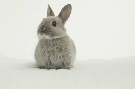

Animals are the most adorable and loving creatures existing on Earth. They might not be able to speak, but they can understand. They have a unique mode of interaction which is beyond human understanding. There are two types of animals: domestic and wild animals.
Rabbits
 Rabbits are small, herbivorous mammals characterized by their long ears, short tails, and powerful hind legs, which enable them to hop and move quickly. They are known for their ability to dig burrows and live in various habitats, including forests, meadows, grasslands, and even deserts. Rabbits are social animals, often living in groups, and are active during the morning and evening, foraging for food. They are also known for their meticulous grooming habits and< their ability to be trained and even binked, a behavior where they jump up in the air and spin around when happy
Capybara
 Capybaras, the world's largest rodents, are semi-aquatic herbivores that thrive in South American wetlands. They are
known for their large, barrel-shaped bodies, coarse brown fur, and webbed feet, making them excellent swimmers.
Capybaras typically live in groups and are quite social, often seen basking in the sun or relaxing in shallow water.
Capybaras, the world's largest rodents, are semi-aquatic herbivores that thrive in South American wetlands. They are
known for their large, barrel-shaped bodies, coarse brown fur, and webbed feet, making them excellent swimmers.
Capybaras typically live in groups and are quite social, often seen basking in the sun or relaxing in shallow water.